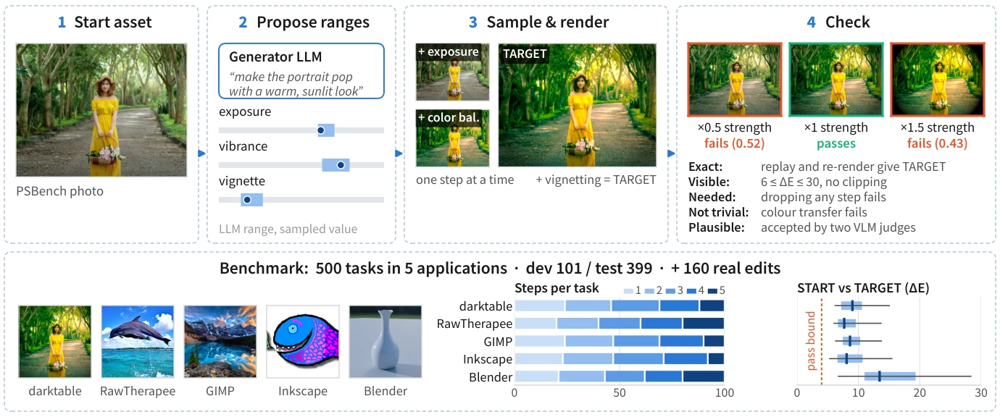
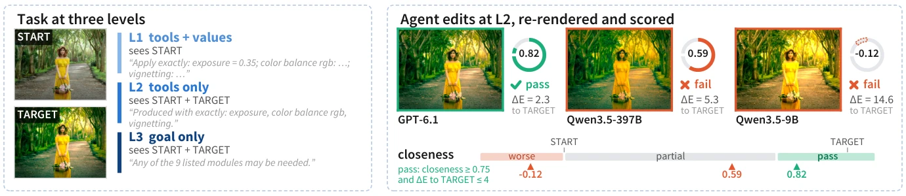
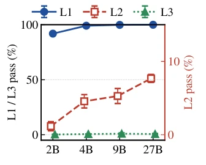
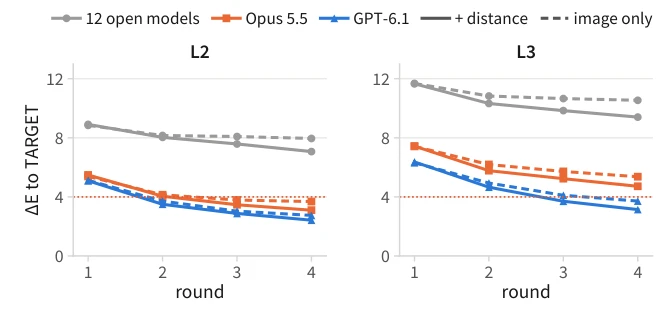
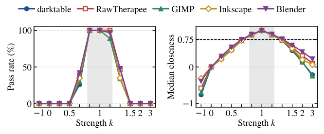

Agents know the tools, but not the amount
Real editing requests describe a look, not the steps to reach it, so an agent that serves them must judge how much of each tool the look takes. Existing benchmarks do not measure this: their tasks either state the tools and values, or leave the amount open and are scored by VLM judges that pass more than half of half- and triple-strength results.
GoldiBench has 500 editing tasks in five professional applications, solvable by writing a program or by operating the GUI. Each task pairs a START image with a TARGET rendered from a hidden program, so the amount has an exact answer. The agent's edit is re-rendered and compared with TARGET, and the same task is posed with the tools and values, the tools only, or the goal only, which separates operation from effect judgement.
pass rate with programs from 4B parameters up, when the values are given (L1).
best pass rate with programs and through the GUI when only the tools are given (L2).
more passes when strong models are forced to compare their result with the target over four renders.

Five applications, three levels, one exact answer
Every task is a hidden program {tool: {field: value}} in the application's own parameters. Rendering it gives TARGET; the agent's final program (or GUI state) is re-rendered by the benchmark, never taken from the agent.
Tools and values
Measures operation: can the agent apply a stated edit?
Tools only
START, TARGET and the tool set. Measures effect judgement: how much of each tool?
Goal only
START and TARGET. Tool choice and effect judgement together.


A cliff between L1 and L2, for every model
25 open, GUI and closed models. Pass rate (%) per level, mean over the five applications (100 tasks each). Open models: mean of 5 seeds (program) or 3 seeds (GUI).
closeness = 1 − ΔE(result, TARGET) / ΔE(START, TARGET), clipped at −1; negative means the edit moved away from the target.
What helps, and what does not
From 0.8B to 397B parameters, Qwen3.5 goes from 87% to 100% at L1 but stays near 10% at L2. GUI agent families show the same pattern.

Allowed four renders, agents almost always stop after the first. Forced to compare all four, the strong models double their pass rate.

Closeness falls steadily as the strength moves away from ×1, so half- and double-strength edits fail while ×0.9 and ×1.1 pass.

Same tools, different amounts
One L2 task per application from the main run: the agents get START, TARGET and the tools, and write the values. Each result is the benchmark's re-render of the agent's final program.
Loading examples…
Through the GUI
BibTeX
@misc{yang2026goldibench,
title = {GoldiBench: Right Tools, Wrong Amount -- Benchmarking Agents on
Effect Judgement in Professional Editing},
author = {Yang, Wang and Li, Xinpeng and Zhang, Yanyan and Song, Chaoda and
Wang, Shouren and Ganguly, Debargha and Singh, Vikash and Ma, Chuang and
Cai, Xiaoran and Ye, Kai and Han, Xiaotian and Chaudhary, Vipin},
year = {2026}
}